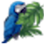
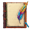
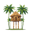
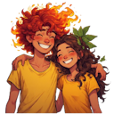

Amazônia Verde

Projeto de reflorestamento de áreas degradadas com espécies nativas, envolvendo comunidades locais no processo de plantio e manutenção.
- Meta: 500.000 árvores plantadas
- Área: 1.000 hectares
- Status: Em andamento
Conheça nossas iniciativas para preservar e recuperar a Floresta Amazônica

Projeto de reflorestamento de áreas degradadas com espécies nativas, envolvendo comunidades locais no processo de plantio e manutenção.


Programa de conscientização e educação ambiental para escolas e comunidades da região amazônica.


Iniciativas de geração de renda sustentável para comunidades tradicionais através do manejo florestal e produtos da floresta.

Nossos voluntários são essenciais para o sucesso de nossos projetos. Oferecemos diversas oportunidades de participação:
Oferecemos treinamento, alojamento e alimentação para voluntários que atuam em nossos projetos na Amazônia.
Quero ser Voluntário
Sua doação é fundamental para mantermos nossos projetos. Com R$ 50,00 podemos plantar 10 árvores nativas.
Também aceitamos doações recorrentes e patrocínios empresariais.
Fazer Doação